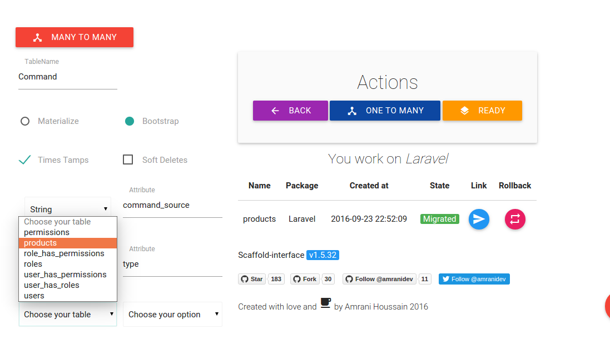
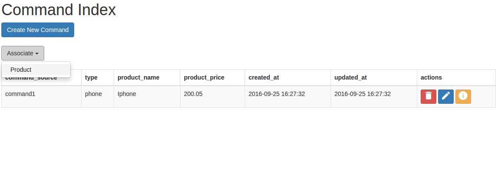

Generating OneToMany relationship
This package provides a simple short way to generate OneToMany relationship.
We could use our previous example Product entity.
So lets create a new entity called Command.
Before ending creation, click on OneToMany button, choose product table, choose associated field and click on OneToMany Button again to be confirmed.

This will create a model with relation methods ,views, controller and migration file containing foreignkeys, for sure you can change whatever you want.
Then click on migration button.
